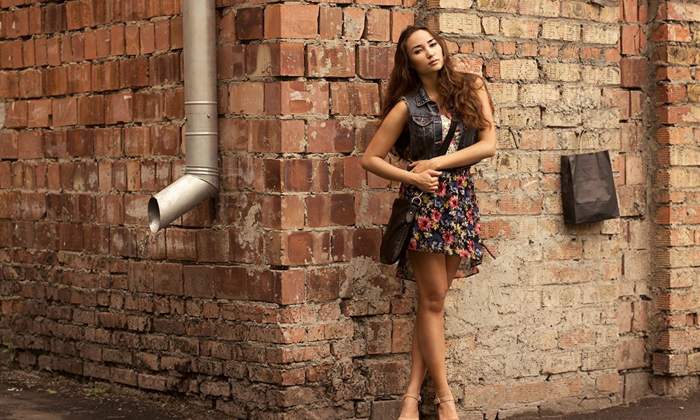
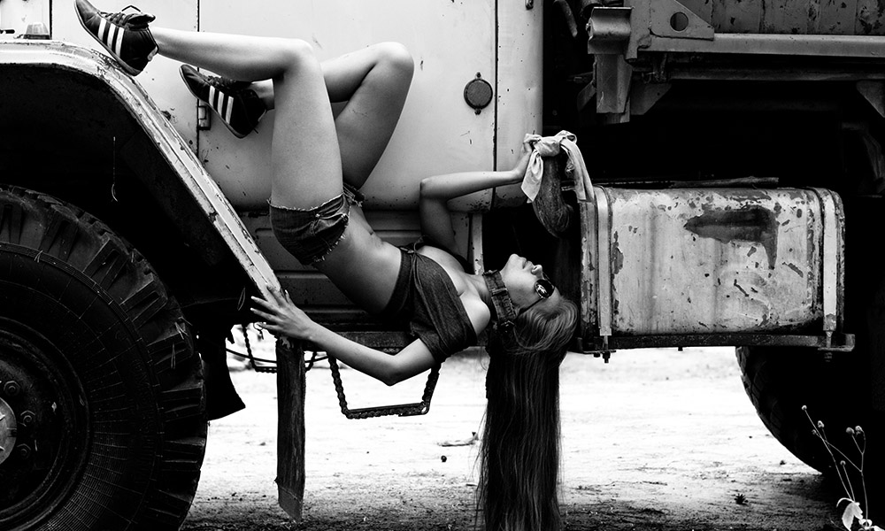
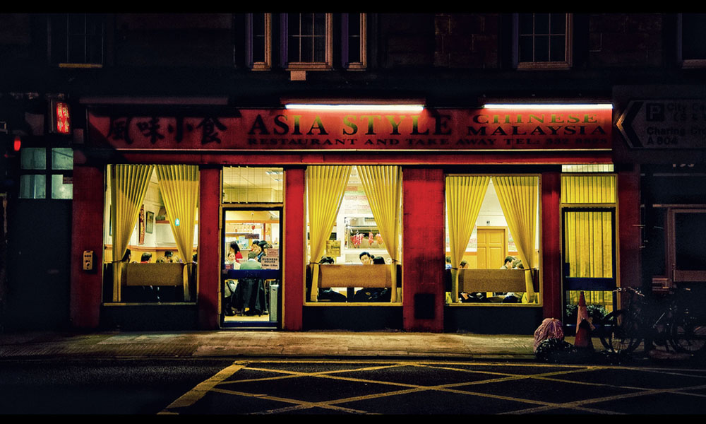

A simplistic & lightweight gallery
In order to get Outlaw set up correctly you need to link the JS & CSS file
Outlaw only has one dependency and that's jQuery, so obviously it will not work without it.
Isn't much going on here, apart from setting the widths of the normal state of the gallery and the toggled version. Also supports zoom-in & zoom-out cursors for IE (Thanks to Andy)
Outlaw uses a pretty cool script where on the toggled state it perfectly centers the div in to the window size
  I would love people to get involved with this project, there is currently a todo list on the README.md, so check that out :)
GitHub Project Download Master @joeyCopyright 2013, Joe Richardson
Licensed under MIT